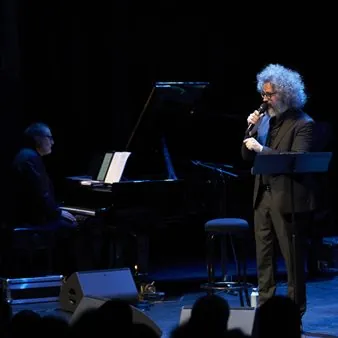

sab 24 ott · dalle 20:45
ERT FVG Stagione Teatrale 2026-27: Orcolat '76
Con Simone Cristicchi fisarmonica e voce: Francesca Gallo voce recitante: Anna Maria De Monte Coro del Friuli Venezia Giulia preparato dal M° Cristiano Dell’Oste FVG Orchestra diretta dal M° Valter Sivilotti testo di Simona Orlando e Simone Cristicchi musiche originali: Valter…
 Indicazioni
Indicazioni
- Costi e prenotazioni
- Costo non indicato · Prenotazione non indicata
- Programma
- Programma da verificare. Apri la fonte ufficiale per orari e possibili aggiornamenti.
- In caso di maltempo
- Nessuna indicazione specifica pubblicata.
- Note
- Acquisito automaticamente dalla fonte.
L’EVENTO
Descrizione completa
Con Simone Cristicchi
fisarmonica e voce: Francesca Gallo
voce recitante: Anna Maria De Monte
Coro del Friuli Venezia Giulia preparato dal M° Cristiano Dell’Oste
FVG Orchestra diretta dal M° Valter Sivilotti testo di Simona Orlando e Simone Cristicchi
musiche originali: Valter Sivilotti
Dopo cinquant’anni da quel 6 maggio 1976 che vide il Friuli raso al suolo dal mostro, dall’orco che provoca quella che Simone Cristicchi chiama la tosse della terra (l’Orcolat, appunto), ritorna in forma di oratorio l’emozionante lavoro scritto a quattro mani da Simone Cristicchi e Simona Orlando, Orcolat’76 , uno spettacolo voluto e prodotto da Edit Eventi e Folkest per l’ERT, con il contributo della Regione Friuli Venezia Giulia e del Comune di Gemona del Friuli. Uno spettacolo che fu messo in scena al primo appuntamento nel duomo di Gemona il 15 settembre 2016, a quarant’anni esatti dal secondo, distruttivo terremoto del Friuli, grazie allora alla Provincia di Udine e al Comune di Gemona. Sono molte le realtà artistiche di alto livello coinvolte, in un significativo lavoro di squadra targato FVG: dal Coro del Friuli Venezia Giulia, preparato dal Maestro Cristiano Dell’Oste, alla FVG Orchestra, entrambi diretti dal Maestro Valter Sivilotti, con gli interventi recitati di Anna Maria De Monte e i cantati di Francesca Gallo, fino agli autori di una serie di brani storici della canzone in friulano che saranno ripresi per l’occasione, come Giorgio Ferigo, Dario Zampa, Ennio Zampa. Di grande suggestione le musiche che sono state appositamente composte da Valter Sivilotti, con testi inediti del gemonese Renato Stroili e dello stesso Simone Cristicchi. La parte teatrale è opera di Simona Orlando e dello stesso Cristicchi. Perché “Dove è stato, il terremoto ritorna, e dove non è mai stato, viene”, scriveva Plinio il vecchio. Le giornate del ricordo hanno riportato alla luce memorie sopite e ferite ancora aperte, seppur a distanza di tanti anni, cicatrici che non andranno mai via. A cinquant’anni di distanza da quel maggio e quel settembre del ’76, quando la terra salì come un cavallone e si ritirò a riposare come niente fosse. “In quei momenti – chiosano Simone Cristicchi e Simona Orlando – puoi vedere i vitigni ascendere in paradiso e ricadere all’inferno. L’Orcolat è ancora vivo, una creatura veloce e famelica che ti rincorre e vuole a tutti i costi raggiungerti.” Un racconto dei fatti di quell’anno, tragici, sì, ma presupposto di una rinascita che ebbe del miracoloso e pose all’attenzione dell’Italia quello che venne chiamato il “modello Friuli”, come è stato ricordato anche in questi giorni. Un lavoro attento e documentato attraverso i ricordi e i racconti di chi visse quei momenti, un lavoro che ripercorre quei giorni, tra realtà, sogno e speranza per il futuro, in una sorta di ponte ideale con i giorni in cui venne realizzato. produzione: Edit Eventi srl
in collaborazione con ERT FVG durata: 90 minuti senza intervallo ad Artegna lo spettacolo è presentato fuori abbonamento
IL PROGRAMMA
Programma e orari
Appuntamenti raccolti dalle fonti elencate. Dove manca un orario, non è ancora disponibile in questa scheda.
Programma pubblicato
- Dal 2026-10-24 al 2026-10-24
INFORMAZIONI UTILI
Prima di partire
- Controllare la fonte prima di partire.
ORGANIZZAZIONE